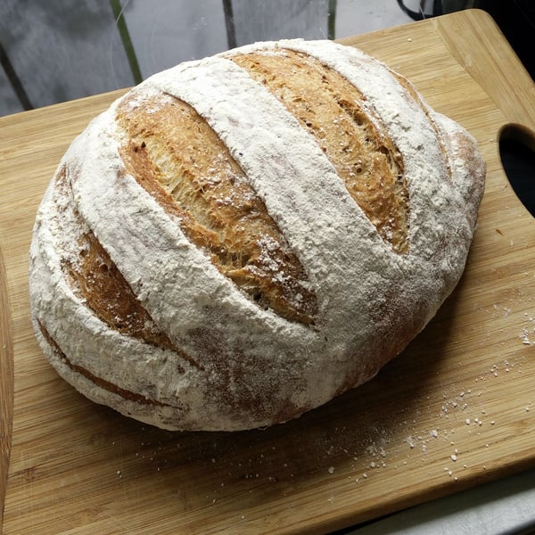

Daikiritos
Un refrescante cóctail de fruta, invento de la familia y excusa perfecta para juntarse a conversar.
Un refrescante cóctail de fruta, invento de la familia y excusa perfecta para juntarse a conversar.
Una hogaza redonda de miga esponjosa, un pan para toda la semana.
Uno de los platos más reconocibles de la cocina hindú. Un curry de pollo para chuparse los dedos.